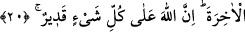
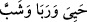
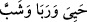
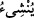
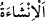

Şeyh Sâdî (k.s.) der ki:
Emriyle yokluktan varlık zuhur eder
Ondan gayrı kim yoktan bir şeyi var eder?
Sonra, varlığı yokluğun meçhullerine götürür
Oradan da mahşer meydanına götürür
“Süphesiz bu” iâde işlemi, “Allah’a göre” zor değil, “kolaydır.” Çünkü O’nun işi ve
fiili bir takım sebeplere bağlı değildir; yaptığı işte herhangi bir sebebe ihtiyaç duymaz.
20. De ki: Yeryüzünde gezip dolaşın da, Allah ilk baştan nasıl yaratmış bir bakın.
İşte Allah bundan sonra (aynı şekilde) âhiret hayatını da yaratacaktır. Gerçekten
Allah her şeye kâdirdir.
Ey Muhammed! Öldükten sonra dirilmeyi (ba‘s) inkâr edenlere “De ki: Yeryüzünde
gezip dolaşın da,” çeşitli memleketlere yolculuklar yapın “Allah” mahlûkâtı
çokluklarına ve farklı şekil, fiil ve hallerde olmalarına rağmen “ilk baştan nasıl
yaratmış bir bakın.”
“İşte Allah bundan sonra (aynı şekilde) “âhiret hayatını da yaratacaktır.”
“ (oldu, meydana geldi)” fiili için; “; “canlandı”, “gelişti”, “yetişti”
(oldu, meydana geldi)” fiili için; “; “canlandı”, “gelişti”, “yetişti”
ve “gençleşti” denilir.
Râğıb İsfehânî der ki: “İnşâ”; bir şeyi yaratmak, onu büyütmek ve yetiştirmek
demektir. Bu fiil, genellikle canlılar hakkında kullanılır. “Neş’et”; “ fiilinin zevâid
harfi (hemze)nin hazfiyle müekked bir masdardır. Aslı “ şeklindedir. Yahut da
âmili hazfedilmiştir. Takdiri şöyledir: Allah inşâ eder; onlar da son yaratılışla tekrar
inşâ olurlar (yaratılırlar, canlanırlar).
Bu hazf ve takdirin bir başka âyetteki örneği de şudur: “Onu (Meryem’i) güzel bir
bitki gibi yetiştirdi” (Âli İmrân, 3/37). Bu âyet-i kerimenin takdiri şöyledir: “Biz onu
bitirdik, o da güzel bir bitki gibi, yetişti.”
Âhiret hayatı, ikinci yaratılıştır ki o da kabirlerden kalkma yaratılışıdır.
Bu cümle, “yeryüzünde gezip dolaşın” cümlesine matuftur. Ve “kavl” maddesinin yâni
“ (de ki)” hitabının sahasına dâhildir. “Haber verme”nin “inşâ etme” üzerine
atfedilmesi iraptan mahalli olan yerlerde câizdir.
Bu cümlenin “mahlûkâtı ilk kez yarattı” cümlesine atfedilmesi, bakmanın (nazarın)